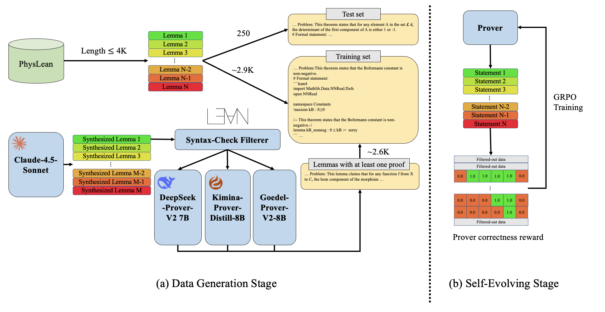

Builds a Lean4 physics theorem-proving dataset from PhysLean and trains a prover with RL using Lean verifier rewards.
Abstract
The combination of verifiable languages and LLMs has significantly influenced both the mathematical and computer science communities because it provides a rigorous foundation for theorem proving. Recent advancements in the field provide foundation models and sophisticated agentic systems pushing the boundaries of formal mathematical reasoning to approach the natural language capability of LLMs. However, little attention has been given to the formal physics reasoning, which also heavily relies on similar problem-solving and theorem-proving frameworks. To solve this problem, this paper presents, to the best of our knowledge, the first approach to enhance formal theorem proving in the physics domain. We compose a dedicated dataset PhysLeanData for the task. It is composed of theorems sampled from PhysLean and data generated by a conjecture-based formal data generation pipeline. In the training pipeline, we leverage DeepSeek-Prover-V2-7B, a strong open-source mathematical theorem prover, and apply Reinforcement Learning with Verifiable Rewards (RLVR) to train our model PhysProver. Comprehensive experiments demonstrate that, using only $\sim$5K training samples, PhysProver achieves an overall 2.4% improvement in multiple sub-domains. Furthermore, after formal physics training, we observe 1.3% gains on the MiniF2F-Test benchmark, which indicates non-trivial generalization beyond physics domains and enhancement for formal math capability as well. The results highlight the effectiveness and efficiency of our approach, which provides a paradigm for extending formal provers outside mathematical domains. To foster further research, we will release both our dataset and model to the community.
Problem
LLM-based formal theorem proving has focused on mathematics, and formal physics reasoning in Lean has received little attention. General math provers handle physics-specific Lean libraries poorly.
Approach
The authors build PhysLeanData by extracting lemma–proof pairs from the PhysLean Lean4 repository. They add synthetic conjectures from Claude-4.5-Sonnet, keeping only those that pass Lean syntax checks and proof-existence checks. DeepSeek-Prover-V2-7B is then trained with GRPO (RLVR), using rewards from the Lean verifier. SFT and rejection-sampling fine-tuning (RAFT) are also compared.

Figure 1: Physics Prover Framework : (a) Data Generation Stage: the training set comprises 5,541 physics statements from both PhysLean ( Tooby-Smith, 2025 ) and synthetic lemmas from Claude-4.5-Sonnet, where the latter are further filtered by Lean syntax and proof existence checks. (b) Self-Evolving Stage: after obtaining the training set, GRPO ( Shao et al., 2024 ) is adopted to train the base pr
Results
With about 5K training samples, PhysProver reaches 36.4% pass@16 on the 250-lemma test set, 2.4% above the base model. It also gains 1.3% on MiniF2F-Test. Plain SFT on the human-written PhysLean proofs lowered accuracy by 6.4%, while RAFT raised it by 1.6%.
Model
Classical
Particle & String
Relativity
QFT
Overall
Claude-4.5-Sonnet
52.9%
19.4%
29.5%
39.4%
34.4%
Goedel-Prover-V2-8B
49.0%
19.4%
34.4%
28.2%
31.6%
DeepSeek-Prover-V2-7B
54.9%
23.9%
37.7%
25.4%
34.0%
PhysProver
58.8%
26.9%
39.3%
26.8%
36.4%
Pass@16 on PhysLeanData test set (selected models)